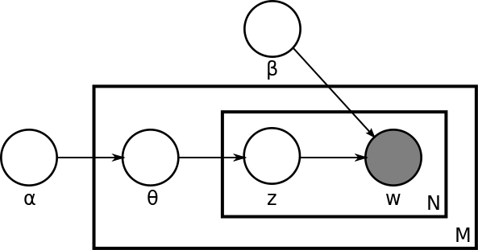

- 000 开篇词 你的360度人工智能信息助理.md
- 001 聊聊2017年KDD大会的时间检验奖.md
- 002 精读2017年KDD最佳研究论文.md
- 003 精读2017年KDD最佳应用数据科学论文.md
- 004 精读2017年EMNLP最佳长论文之一.md
- 005 精读2017年EMNLP最佳长论文之二.md
- 006 精读2017年EMNLP最佳短论文.md
- 007 精读2017年ICCV最佳研究论文.md
- 008 精读2017年ICCV最佳学生论文.md
- 009 如何将深度强化学习应用到视觉问答系统？.md
- 010 精读2017年NIPS最佳研究论文之一：如何解决非凸优化问题？.md
- 011 精读2017年NIPS最佳研究论文之二：KSD测试如何检验两个分布的异同？.md
- 012 精读2017年NIPS最佳研究论文之三：如何解决非完美信息博弈问题？.md
- 013 WSDM 2018论文精读：看谷歌团队如何做位置偏差估计.md
- 014 WSDM 2018论文精读：看京东团队如何挖掘商品的替代信息和互补信息.md
- 015 WSDM 2018论文精读：深度学习模型中如何使用上下文信息？.md
- 016 The Web 2018论文精读：如何对商品的图片美感进行建模？.md
- 017 The Web 2018论文精读：如何改进经典的推荐算法BPR？.md
- 018 The Web 2018论文精读：如何从文本中提取高元关系？.md
- 019 SIGIR 2018论文精读：偏差和流行度之间的关系.md
- 020 SIGIR 2018论文精读：如何利用对抗学习来增强排序模型的普适性？.md
- 021 SIGIR 2018论文精读：如何对搜索页面上的点击行为进行序列建模？.md
- 022 CVPR 2018论文精读：如何研究计算机视觉任务之间的关系？.md
- 023 CVPR 2018论文精读：如何从整体上对人体进行三维建模？.md
- 024 CVPR 2018论文精读：如何解决排序学习计算复杂度高这个问题？.md
- 025 ICML 2018论文精读：模型经得起对抗样本的攻击？这或许只是个错觉.md
- 026 ICML 2018论文精读：聊一聊机器学习算法的公平性问题.md
- 027 ICML 2018论文精读：优化目标函数的时候，有可能放大了不公平？.md
- 028 ACL 2018论文精读：问答系统场景下，如何提出好问题？.md
- 029 ACL 2018论文精读：什么是对话中的前提触发？如何检测？.md
- 030 ACL 2018论文精读：什么是端到端的语义哈希？.md
- 030 复盘 7 一起来读人工智能国际顶级会议论文.md
- 031 经典搜索核心算法：TF-IDF及其变种.md
- 032 经典搜索核心算法：BM25及其变种（内附全年目录）.md
- 033 经典搜索核心算法：语言模型及其变种.md
- 034 机器学习排序算法：单点法排序学习.md
- 035 机器学习排序算法：配对法排序学习.md
- 036 机器学习排序算法：列表法排序学习.md
- 037 查询关键字理解三部曲之分类.md
- 038 查询关键字理解三部曲之解析.md
- 039 查询关键字理解三部曲之扩展.md
- 040 搜索系统评测，有哪些基础指标？.md
- 041 搜索系统评测，有哪些高级指标？.md
- 042 如何评测搜索系统的在线表现？.md
- 043 文档理解第一步：文档分类.md
- 044 文档理解的关键步骤：文档聚类.md
- 045 文档理解的重要特例：多模文档建模.md
- 046 大型搜索框架宏观视角：发展、特点及趋势.md
- 047 多轮打分系统概述.md
- 048 搜索索引及其相关技术概述.md
- 049 PageRank算法的核心思想是什么？.md
- 050 经典图算法之HITS.md
- 051 社区检测算法之模块最大化
- 052 机器学习排序算法经典模型：RankSVM.md
- 053 机器学习排序算法经典模型：GBDT.md
- 054 机器学习排序算法经典模型：LambdaMART.md
- 055 基于深度学习的搜索算法：深度结构化语义模型.md
- 056 基于深度学习的搜索算法：卷积结构下的隐含语义模型.md
- 057 基于深度学习的搜索算法：局部和分布表征下的搜索模型.md
- 057 复盘 1 搜索核心技术模块.md
- 058 简单推荐模型之一：基于流行度的推荐模型.md
- 059 简单推荐模型之二：基于相似信息的推荐模型.md
- 060 简单推荐模型之三：基于内容信息的推荐模型.md
- 061 基于隐变量的模型之一：矩阵分解.md
- 062 基于隐变量的模型之二：基于回归的矩阵分解.md
- 063 基于隐变量的模型之三：分解机.md
- 064 高级推荐模型之一：张量分解模型.md
- 065 高级推荐模型之二：协同矩阵分解.md
- 066 高级推荐模型之三：优化复杂目标函数.md
- 067 推荐的Exploit和Explore算法之一：EE算法综述.md
- 068 推荐的Exploit和Explore算法之二：UCB算法.md
- 069 推荐的Exploit和Explore算法之三：汤普森采样算法.md
- 070 推荐系统评测之一：传统线下评测.md
- 071 推荐系统评测之二：线上评测.md
- 072 推荐系统评测之三：无偏差估计.md
- 073 现代推荐架构剖析之一：基于线下离线计算的推荐架构.md
- 074 现代推荐架构剖析之二：基于多层搜索架构的推荐系统.md
- 075 现代推荐架构剖析之三：复杂现代推荐架构漫谈.md
- 076 基于深度学习的推荐模型之一：受限波兹曼机.md
- 077 基于深度学习的推荐模型之二：基于RNN的推荐系统.md
- 078 基于深度学习的推荐模型之三：利用深度学习来扩展推荐系统.md
- 078 复盘 2 推荐系统核心技术模块.md
- 079 广告系统概述.md
- 080 广告系统架构.md
- 081 广告回馈预估综述.md
- 082 Google的点击率系统模型.md
- 083 Facebook的广告点击率预估模型.md
- 084 雅虎的广告点击率预估模型.md
- 085 LinkedIn的广告点击率预估模型.md
- 086 Twitter的广告点击率预估模型.md
- 087 阿里巴巴的广告点击率预估模型.md
- 088 什么是基于第二价位的广告竞拍？.md
- 089 广告的竞价策略是怎样的？.md
- 090 如何优化广告的竞价策略？.md
- 091 如何控制广告预算？.md
- 092 如何设置广告竞价的底价？.md
- 093 聊一聊程序化直接购买和广告期货.md
- 094 归因模型：如何来衡量广告的有效性.md
- 095 广告投放如何选择受众？如何扩展受众群？.md
- 096 复盘 4 广告系统核心技术模块.md
- 096 如何利用机器学习技术来检测广告欺诈？.md
- 097 LDA模型的前世今生.md
- 098 LDA变种模型知多少.md
- 099 针对大规模数据，如何优化LDA算法？.md
- 100 基础文本分析模型之一：隐语义分析.md
- 101 基础文本分析模型之二：概率隐语义分析.md
- 102 基础文本分析模型之三：EM算法.md
- 103 为什么需要Word2Vec算法？.md
- 104 Word2Vec算法有哪些扩展模型？.md
- 105 Word2Vec算法有哪些应用？.md
- 106 序列建模的深度学习利器：RNN基础架构.md
- 107 基于门机制的RNN架构：LSTM与GRU.md
- 108 RNN在自然语言处理中有哪些应用场景？.md
- 109 对话系统之经典的对话模型.md
- 110 任务型对话系统有哪些技术要点？.md
- 111 聊天机器人有哪些核心技术要点？.md
- 112 什么是文档情感分类？.md
- 113 如何来提取情感实体和方面呢？.md
- 114 复盘 3 自然语言处理及文本处理核心技术模块.md
- 114 文本情感分析中如何做意见总结和搜索？.md
- 115 什么是计算机视觉？.md
- 116 掌握计算机视觉任务的基础模型和操作.md
- 117 计算机视觉中的特征提取难在哪里？.md
- 118 基于深度学习的计算机视觉技术（一）：深度神经网络入门.md
- 119 基于深度学习的计算机视觉技术（二）：基本的深度学习模型.md
- 120 基于深度学习的计算机视觉技术（三）：深度学习模型的优化.md
- 121 计算机视觉领域的深度学习模型（一）：AlexNet.md
- 122 计算机视觉领域的深度学习模型（二）：VGG & GoogleNet.md
- 123 计算机视觉领域的深度学习模型（三）：ResNet.md
- 124 计算机视觉高级话题（一）：图像物体识别和分割.md
- 125 计算机视觉高级话题（二）：视觉问答.md
- 126 计算机视觉高级话题（三）：产生式模型.md
- 126复盘 5 计算机视觉核心技术模块.md
- 127 数据科学家基础能力之概率统计.md
- 128 数据科学家基础能力之机器学习.md
- 129 数据科学家基础能力之系统.md
- 130 数据科学家高阶能力之分析产品.md
- 131 数据科学家高阶能力之评估产品.md
- 132 数据科学家高阶能力之如何系统提升产品性能.md
- 133 职场话题：当数据科学家遇见产品团队.md
- 134 职场话题：数据科学家应聘要具备哪些能力？.md
- 135 职场话题：聊聊数据科学家的职场规划.md
- 136 如何组建一个数据科学团队？.md
- 137 数据科学团队养成：电话面试指南.md
- 138 数据科学团队养成：Onsite面试面面观.md
- 139 成为香饽饽的数据科学家，如何衡量他们的工作呢？.md
- 140 人工智能领域知识体系更新周期只有5～6年，数据科学家如何培养？.md
- 141 数据科学家团队组织架构：水平还是垂直，这是个问题.md
- 142 数据科学家必备套路之一：搜索套路.md
- 143 数据科学家必备套路之二：推荐套路.md
- 144 数据科学家必备套路之三：广告套路.md
- 145 如何做好人工智能项目的管理？.md
- 146 数据科学团队必备的工程流程三部曲.md
- 147 数据科学团队怎么选择产品和项目？.md
- 148 曾经辉煌的雅虎研究院.md
- 149 微软研究院：工业界研究机构的楷模.md
- 150 复盘 6 数据科学家与数据科学团队是怎么养成的？.md
- 150 聊一聊谷歌特立独行的混合型研究.md
- 151 精读AlphaGo Zero论文.md
- 152 2017人工智能技术发展盘点.md
- 153 如何快速学习国际顶级学术会议的内容？.md
- 154 在人工智能领域，如何快速找到学习的切入点？.md
- 155 人工智能技术选择，该从哪里获得灵感？.md
- 156 内参特刊 和你聊聊每个人都关心的人工智能热点话题.md
- 156 近在咫尺，走进人工智能研究.md
- 结束语 雄关漫道真如铁，而今迈步从头越.md
097 LDA模型的前世今生
在文本挖掘中，有一项重要的工作就是分析和挖掘出文本中隐含的结构信息，而不依赖任何提前标注的信息。今天我要介绍的是一个叫做LDA（Latent Dirichlet Allocation）的模型，它在过去十年里开启了一个领域叫主题模型。
从LDA提出后，不少学者都利用它来分析各式各样的文档数据，从新闻数据到医药文档，从考古文献到政府公文。一段时间内，LDA成了分析文本信息的标准工具。从最原始的LDA发展出来的各类模型变种，则被应用到了多种数据类型上，包括图像、音频、混合信息、推荐系统、文档检索等等，各类主题模型变种层出不穷。下面我来简单剖析一下LDA这个模型，聊聊它的模型描述以及训练方法等基础知识。
LDA的背景介绍
LDA的论文作者是戴维·布雷（David Blei）、吴恩达和迈克尔·乔丹（Michael Jordan）。这三位都是今天机器学习界炙手可热的人物。论文最早发表在2002年的神经信息处理系统大会（Neural Information Processing Systems，简称NIPS）上，然后长文章（Long Paper）于2003年在机器学习顶级期刊《机器学习研究杂志》（Journal of Machine Learning Research）上发表。迄今为止，这篇论文已经有超过1万9千次的引用数，也成了机器学习史上的重要文献之一。
论文发表的时候，戴维·布雷还在加州大学伯克利分校迈克尔手下攻读博士。吴恩达当时刚刚从迈克尔手下博士毕业来到斯坦福大学任教。戴维 2004年从伯克利毕业后，先到卡内基梅隆大学跟随统计学权威教授约翰·拉弗蒂（John Lafferty）做了两年的博士后学者，然后又到东部普林斯顿大学任教职，先后担任助理教授和副教授。2014年转到纽约哥伦比亚大学任统计系和计算机系的正教授。戴维在2010年获得斯隆奖（Alfred P. Sloan Fellowship，美国声誉极高的奖励研究人员的奖项，不少诺贝尔奖获得者均在获得诺贝尔奖多年之前获得过此奖），紧接着又在2011年获得总统青年科学家和工程师早期成就奖（Presidential Early Career Award for Scientists and Engineers，简称PECASE）。目前他所有论文的引用数超过了4万9千次 。
吴恩达在斯坦福晋升到副教授后，2011年到2012年在Google工作，开启了谷歌大脑（Google Brain）的项目来训练大规模的深度学习模型，是深度学习的重要人物和推动者之一。2012年他合作创建了在线学习平台Coursera，可以说是打开了慕课（Massive Open Online Course，简称MOOC）运动的大门。之后吴恩达从2014年到2017年间担任百度首席科学家，并创建和运行了百度在北美的研究机构。目前他所有论文的引用数超过8万3千次。
文章的第三作者迈克尔·乔丹是机器学习界的泰斗人物。他自1998年在加州大学伯克利任教至今，是美国三个科学院院士（American Academy of Arts and Sciences、National Academy of Engineering以及National Academy of Sciences），是诸多学术和专业组织的院士（比如ACM、IEEE、AAAI、SIAM等）。迈克尔可以说是桃李满天下，而且其徒子徒孙也已经遍布整个机器学习领域，不少都是学术权威。他的所有论文有多达12万次以上的引用量。
值得注意的是，对于三位作者来说，LDA论文都是他们单篇论文引用次数最多的文章。
LDA模型
要描述LDA模型，就要说一下LDA模型所属的产生式模型（Generative Model）的背景。产生式模型是相对于判别式模型（Discriminative Model）而说的。这里，我们假设需要建模的数据有特征信息，也就是通常说的X，以及标签信息，也就是通常所说的Y。
判别式模型常常直接对Y的产生过程（Generative Process)进行描述，而对特征信息本身不予建模。这使得判别式模型天生就成为构建分类器或者回归分析的有利工具。而产生式模型则要同时对X和Y建模，这使得产生式模型更适合做无标签的数据分析，比如聚类。当然，因为产生式模型要对比较多的信息进行建模，所以一般认为对于同一个数据而言，产生式模型要比判别式模型更难以学习。
一般来说，产生式模型希望通过一个产生过程来帮助读者理解一个模型。注意，这个产生过程本质是描述一个联合概率分布（Joint Distribution）的分解过程。也就是说，这个过程是一个虚拟过程，真实的数据往往并不是这样产生的。这样的产生过程是模型的一个假设，一种描述。任何一个产生过程都可以在数学上完全等价一个联合概率分布。
LDA的产生过程描述了文档以及文档中文字的生成过程。在原始的LDA论文中，作者们描述了对于每一个文档而言有这么一种生成过程：
- 首先，从一个全局的泊松（Poisson）参数为β的分布中生成一个文档的长度N；
- 从一个全局的狄利克雷（Dirichlet）参数为α的分布中生成一个当前文档的θ；
- 然后对于当前文档长度N的每一个字执行以下两步，一是从以θ为参数的多项（Multinomial）分布中生成一个主题（Topic）的下标（Index）z_n；二是从以φ和z共同为参数的多项分布中产生一个字（Word）w_n。

从这个描述我们可以马上得到这些重要的模型信息。第一，我们有一个维度是K乘以V的主题矩阵（Topic Matrix）。其中每一行都是一个φ，也就是某一个生成字的多项分布。当然，这个主题矩阵我们在事先并不知道，是需要学习得到的。另外，对每一个文档而言，θ是一个长度为K的向量，用于描述当前文档在K个主题上的分布。产生过程告诉我们，我们对于文档中的每一个字，都先从这个θ向量中产生一个下标，用于告诉我们现在要从主题矩阵中的哪一行去生成当前的字。
这个产生模型是原论文最初提出的，有两点值得注意。
第一，原始论文为了完整性，提出了使用一个泊松分布来描述文档的长度这一变化信息。然而，从模型的参数和隐变量的角度来说，这个假设并不影响整个模型，最终作者在文章中去除了这个信息的讨论。在主题模型的研究中，也较少有文献专注这个信息。
第二，原始论文并没有在主题矩阵上放置全局的狄利克雷分布作为先验概率分布。这一缺失在后续所有的主题模型文献中得到修正。于是今天标准的LDA模型有两类狄利克雷的先验信息，一类是文档主题分布的先验，参数是α，一类是主题矩阵的先验，参数是β。
文章作者们把这个模型和当时的一系列其他模型进行了对比。比如说，LDA并不是所谓的狄利克雷-多项（Dirichlet-Multinomial）聚类模型。这里，LDA对于每个文档的每一个字都有一个主题下标。也就是说，从文档聚类的角度来看，LDA是没有一个文档统一的聚类标签，而是每个字有一个聚类标签，在这里就是主题。这也是LDA是Mixed-Membership模型的原因——每个字有可能属于不同的类别、每个文档也有可能属于不同的类别。
LDA很类似在2000年初提出的另外一类更简单的主题模型——概率隐形语义索引（Probabilistic Latent Semantic Indexing），简称PLSI。其实从本质上来说，LDA借用了PLSI的基本架构，只不过在每个文档的主题分布向量上放置了狄利克雷的先验概率，以及在主题矩阵上放置了另外一个狄利克雷的先验概率。
尽管看上去这是一个非常小的改动，但是这样做的结果则是LDA的参数个数并不随着文档数目的增加而增加。那么，相对于PLSI来说，LDA并不容易对训练数据过度拟合（Overfitting）。
值得注意的，原始文章说过度拟合主要是指，对于PLSI而言，文档的主题分布向量是必须需要学习的，而这个向量对于LDA是可以被忽略或者说是并不需要保存的中间变量。然而在实际的应用中，我们其实常常也需要这个向量的信息，因此这部分对于过度拟合的讨论在后来的应用中并没有特别体现。
LDA模型的训练和结果
LDA虽然从某种意义上来说仅仅是在PLSI上增加了先验信息。然而，这一个改动为整个模型的训练学习带来了非常大的挑战。应该说，整个LDA的学习直到模型提出后近10年，才随着随机变分推理（Stochastic Variational Inference）的提出以及基于别名方法（Alias Method）的抽样算法（Sampling Method）而得以真正的大规模化。一直以来，LDA的训练学习都是一件很困难的事情。
不像PLSI可以依靠最大期望（EM）算法得以比较完美的解决，传统上，LDA的学习属于贝叶斯推理（Bayesian Inference），而在2000年代初期，只有马尔科夫蒙特卡洛（Markov chain Monte Carlo），简称MCMC，以及迈克尔·乔丹等人推崇的变分推理（Variational Inference），简称VI，作为工具可以解决。这篇文章因为出自迈克尔的实验室，当仁不让地选择了VI。比较有意思的是，后续大多数LDA相关的论文都选择了MCMC为主的吉布斯（Gibbs）采样来作为学习算法。
VI的完整讲解无法在本文涵盖。从最高的层次上来理解，VI是选取一整组简单的、可以优化的所谓变分分布（Variational Distribution）来逼近整个模型的后验概率分布。当然，由于这组分布的选取，有可能会为模型带来不小的误差。不过好处则是这样就把贝叶斯推理的问题转化成了优化问题。
从LDA的角度来讲，就是要为θ以及z选取一组等价的分布，只不过更加简单，更不依赖其他的信息。在VI进行更新θ以及z的时候，算法可以根据当前的θ以及z的最新值，更新α的值（这里的讨论依照原始的LDA论文，忽略了β的信息）。整个流程俗称变分最大期望（Variational EM）算法。
文章在TREC AP的文档数据中做了实验。首先，作者们使用了一个叫困惑度（Perplexity）的评估值来衡量文档的建模有效程度，这个值越低越好。LDA在好几个数据集中都明显好于PLSI以及其他更加简单的模型。从这篇文章之后，主题模型的发展和对比都离不开困惑度的比较，也算是开启了一个新时代。
然后，作者们展示了利用LDA来做文档分类，也就是利用文档主题向量来作为文档的特征，从而放入分类器中加以分类。作者们展示了LDA作为文档分类特征的有力证据，在数据比较少的情况下优于文本本身的特征。不过总体说来，在原始的LDA论文中，作者们并没有特别多地展现出LDA的所有可能性。
小结
今天我为你梳理了LDA提出的背景以及这篇论文所引领的整个领域的情况。你需要掌握的核心要点：第一，论文作者们目前的状态；第二，LDA模型本身和它的一些特点；第三，LDA的训练流程概况以及在原始文章中的实验结果。
最后，我为你留一个思考题：LDA的产生过程决定了对于一个文本而言，每个字都可能来自不同的主题，那么如果你希望，对于某一个段落，所有的文字都来自同一个主题，你需要对LDA这个模型进行怎么样的修改呢？
© 2019 - 2023 Liangliang Lee. Powered by Vert.x and hexo-theme-book.